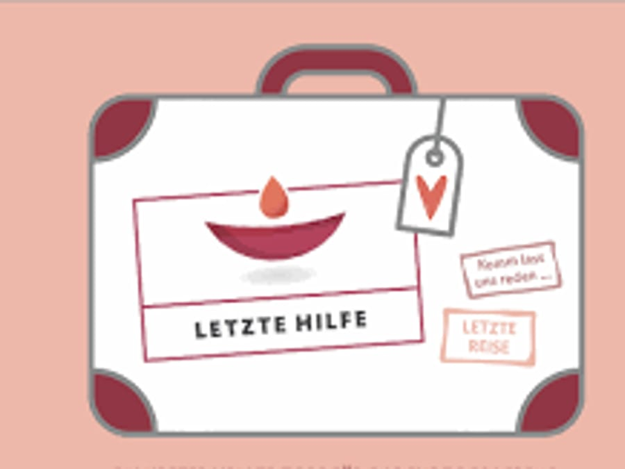
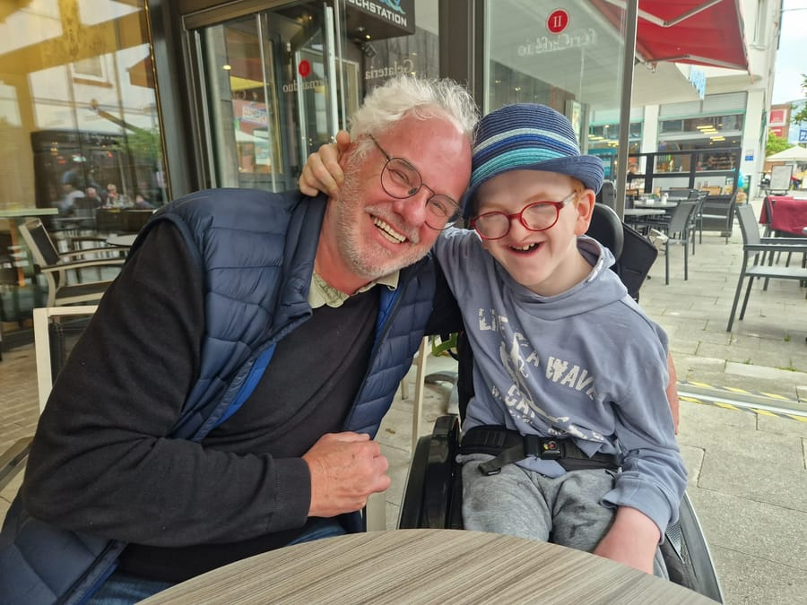
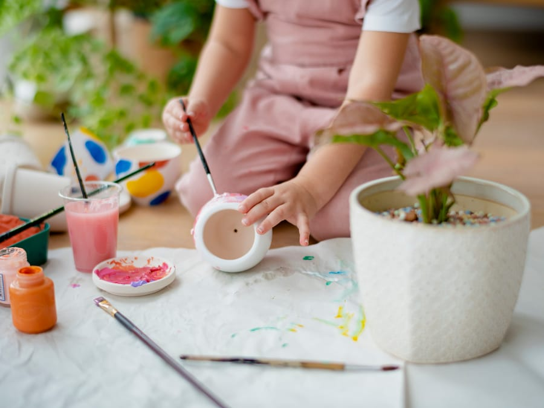

Erwachsene zu Hause
Begleitung bei einer lebensverkürzenden Diagnose – zu Hause oder dort, wo Sie sich wohlfühlen.
Von der Begleitung zu Hause bis zu Trauerangeboten: ein Überblick über unsere Angebote.
Begleitung bei einer lebensverkürzenden Diagnose – zu Hause oder dort, wo Sie sich wohlfühlen.
Für Familien mit einem fortschreitend und lebensbegrenzend erkrankten Kind: Entlastung, Begleitung, Zeit.
Offene Gruppen und Einzelgespräche für Erwachsene und Kinder nach einem Abschied.
Drittklässler und Viertklässler behutsam an die großen Lebensthemen heranführen.

Das kleine 1x1 der Sterbebegleitung: Basiswissen, Orientierung und einfache Handgriffe für alle.
Sterbebegleitung heißt für uns auch Lebensbegleitung. Wir unterstützen Betroffene und ihre Angehörigen während dieser Lebensphase – zu Hause oder dort, wo sie sich wohlfühlen. Ist eine Versorgung zu Hause irgendwann nicht mehr möglich, kann auch ein stationäres HospizWenn ein Verbleib zu Hause nicht mehr möglich ist, kann ein stationäres Hospiz ein geschützter Ort sein: Rund um die Uhr gibt es dort medizinische und pflegerische Versorgung – und Menschen, die zuhören und da sind. eine gute Alternative sein.
Uns geht es darum, die Bedürfnisse und Wünsche des erkrankten Menschen ernst zu nehmen und ihm seine Würde zu bewahren – oder sie ihm zurückzugeben, wo sie verloren gegangen ist. Besonders ausgebildete ehrenamtliche Mitarbeiterinnen und Mitarbeiter stehen Ihnen für die seelische und soziale Begleitung zur Seite. Das kann zum Beispiel bedeuten:
Wenn ein Kind oder Jugendlicher lebensbegrenzend erkrankt, gerät für die ganze Familie alles ins Wanken. Was betroffenen Familien im Alltag oft fehlt, ist nicht Zuneigung oder Liebe, sondern Zeit: Zeit für das kranke Kind, für die Geschwister, für die Arbeit, für sich selbst als Eltern.
Sechs Ehrenamtliche sind mittlerweile speziell als Familienbegleiter:innen ausgebildet. Wir bieten:
Auch hier gilt: Was Sie uns anvertrauen, bleibt bei uns.

Ein Abschied verändert alles. Und die Zeit danach braucht oft genauso viel Raum wie die Zeit davor – deshalb hört unsere Begleitung nicht auf, wenn ein Mensch gestorben ist.
In unseren offenen Gruppen treffen Sie Menschen, die Ähnliches erleben, begleitet von erfahrenen Gesprächsleiterinnen. Wenn Ihnen ein Einzelgespräch lieber ist als eine Gruppe: Auch das ist möglich.
Kinder trauern in Wellen: In einem Moment fließen Tränen, im nächsten spielen sie versunken weiter. Unsere Gruppe ist für Kinder zwischen 6 und 12 Jahren. Mit spielerischen und kreativen Angeboten helfen wir ihnen, Erinnerungen zu bewahren und mit Hoffnung nach vorne zu schauen.

Mit unserem Projekt „Hospiz macht Schule" bereiten wir schon Drittklässler und Viertklässler behutsam auf die großen Lebensthemen vor: Werden und Vergehen, Krankheit und Leid, Sterben und Tod, das Traurig-Sein, Trost und Trösten. Seit zehn Jahren gehen wir mit diesem Projekt in die Schulen der Region.
Mindestens fünf bis sechs ehrenamtliche Mitarbeitende gehen für fünf Tage gemeinsam als Team in eine Schulklasse, ausgebildet nach dem Standard der Bundes-Hospiz-Akademie – mit Geschichten, Bilderbüchern, Collagen und Fantasiereisen. Am letzten Tag präsentieren die Kinder ihre Ergebnisse den Eltern bei einem Abschlussfest.
Obwohl sich die meisten Menschen wünschen, zu Hause zu sterben, stirbt der größte Teil der Bevölkerung in Krankenhäusern und Pflegeheimen. Wir bieten einen Basiskurs an, in dem interessierte Menschen lernen, was sie für ihre Mitmenschen am Ende des Lebens tun können.
Letzte-Hilfe-Kurse vermitteln Basiswissen, Orientierung und einfache Handgriffe. Sterbebegleitung ist keine Wissenschaft, sondern gelebte Mitmenschlichkeit – möglich in der eigenen Familie und Nachbarschaft. Wir sprechen über die Normalität des Sterbens, über Patientenverfügung und Vorsorgevollmacht, über mögliche Beschwerden und über das Abschiednehmen.